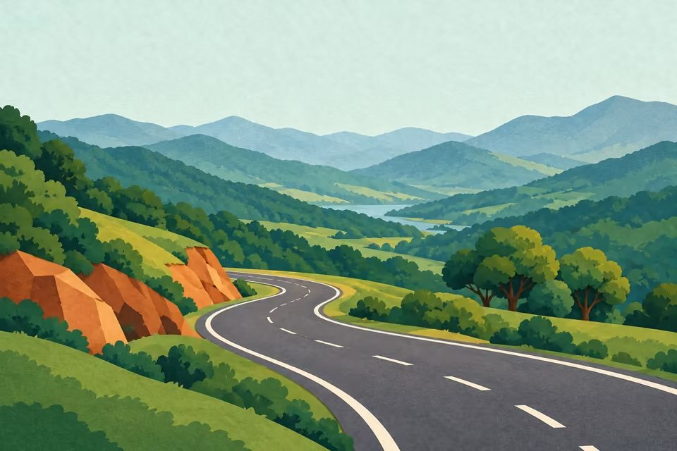
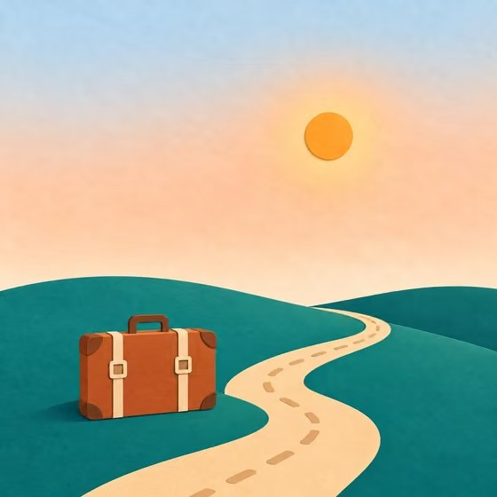

Component kit · papercut warmth
Every control, one paper family
Focus ring: lagoon, 3px, offset by a paper gap.
Confirmed
Maybe
Needs booking
Suggested
Clash
Must do
Optional
Stay day
Drive day
Search a place or paste a link

Kochi to MunnarSat 14 · 4 stops · 128 km · ends 19:15
Clear

Road measured · 115 km
Tooltips are warm ink, not navy.
Echo Point moved to Day 3
Measuring the road3 of 5 legs

Nothing planned for Day 3 yet
Add a stop, or take one of the ideas near Thekkady.
Bottom sheet · phone
Paper sheet with a 30px top radius, a sand grab handle, and the scrim at the scrim blur tier. Same component carries stop actions, the day picker and the impact preview on phone.
Dark theme · night sky
Night is a deep navy sky, so the covers glow like lit windows.
Kundala Lake55 min · shikara ₹350
Must do